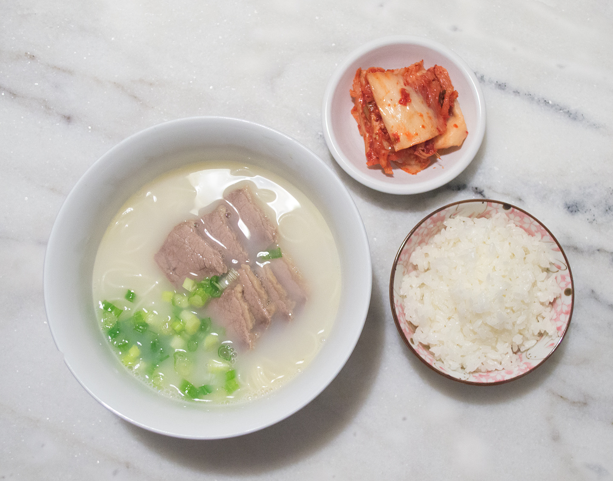

Seolleongtang (Ox Bone Soup)
Seolleongtang, or ox bone soup, is a milky beef bone soup that’s made by boiling down ox leg bones for several hours until the broth becomes rich and creamy white. This broth is a staple in Korean households, especially during cold winter months.

-
Ingredients:
- 3-4 pounds of beef marrow bones, cut up
- 1-2 pounds beef brisket or shank meat
- Cooked rice
- Cooked glass noodles
- Thinly sliced meat, cooked with the bones
- Chopped scallions
- Salt and pepper
-
Steps:
- Soak the bones in cold water to draw out as much blood as possible, about 1 hour (or longer if you have time). Rinse well and drain.
- Soak the meat in another bowl to draw out as much blood as possible, about 1 hour. Drain. Keep it in the fridge until ready to use.
- Add the bones to a large stockpot (preferably 8 quarts or largewith enough cold water to cover. Bring it to a boil over high heat. Reduce the heat to medium, and boil for 5 minutes.
- Drain. Rinse the bones, and clean out the pot to remove any brown bits. Return the bones to the pot.
- Fill up the pot with cold water, leaving a little room for boiling. Bring it to a boil over high heat, and reduce the heat to medium.
- Cover, and boil until the broth becomes rich and milky, about 5 hours (or longer if you have time). Adjust the heat a little, if necessary, to maintain a medium boil. (On my stove, this is somewhere between medium and medium low.) Add more water (boiling hot water to maintain the cooking temperature) to cover the bones, once or twice while boiling. (This photo was taken at the 3-hour point.)
- Add the soaked meat (and more water if needed to submerge the meat). Boil until the meat is tender, for 1-1/2 to 2 hours. Remove the meat. Once cooled, thinly slice the meat to add to the soup when serving. Pour the broth through a colander into another pot or a large bowl to cool.
- Fill up the pot with fresh water again. Bring to a boil over high heat. Reduce the heat to medium. Cover, and boil until the broth becomes rich and milky, 3 - 5 hours. Reduce the heat a little, as necessary, to maintain a moderate boil. Add more water if the liquid reduces too quickly while boiling. Pour the milky broth through a colander into the pot or large bowl that contains the first batch. You can repeat this one more time, if desired. Just mix them all at the end to even it out.
- You can use a fat separator to remove the fat, or keep it in the fridge (or out on the deck or balcony in the winter until the fat solidifies to spoon off the fat.
- To serve, place some rice and, if desired, noodles in a serving bowl, add the meat pieces, and then ladle the hot broth on top. Typically, chopped scallions, salt and pepper are served separately so each person can season to taste. Serve piping hot with kimchi.
Sourced from Korean Bapsang, by Hyosun Ro